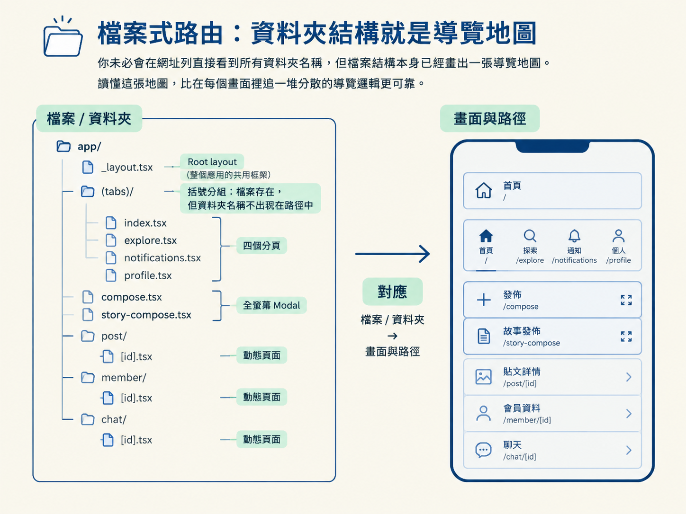
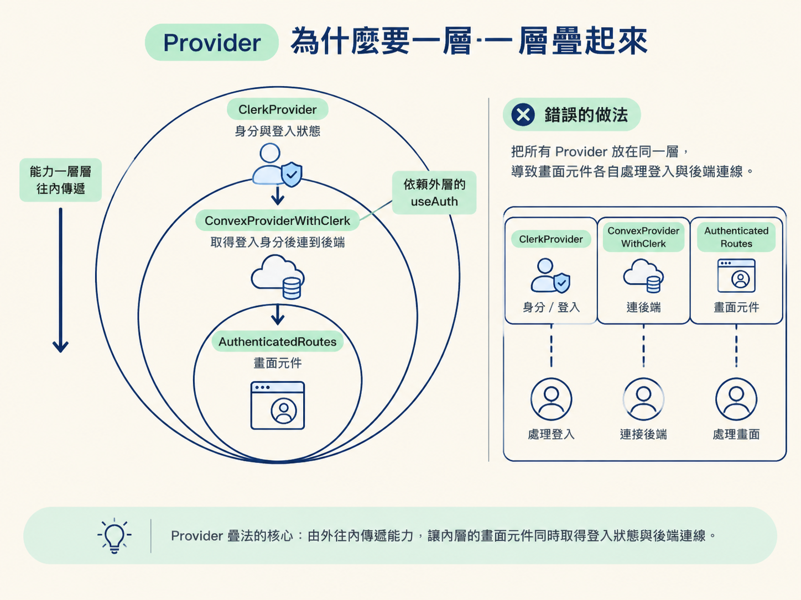

當你接手一個 Expo 專案，常會先遇到一個問題：登入狀態、後端連線、錯誤監控和導覽畫面，究竟應該放在哪裡？如果這些東西散落在各個畫面裡，app 很快就會像沒有總開關的配電箱，出了問題很難追。
這時可以從 src/app/_layout.tsx 開始。它就是 Expo Router 的 App Shell，像整間房子的門廳：先把所有畫面共用的能力準備好，再讓使用者進入不同頁面。這一節會用 Codexgram 的 root layout，把前面學過的 React Native、Expo、native module 和登入流程，全部接回一個真實檔案。
讀完這一節，你應該能看懂 Expo Router 專案的 root layout：檔案式路由如何對應畫面、Provider 為什麼要一層層包起來，以及 Stack.Protected 如何依登入狀態分流。
Expo Router 的第一個規則很直觀：app/ 目錄底下的檔案，就是 app 的路由地圖。你不需要另外維護一份神祕的路由清單，檔案放在哪裡，本身就代表它會對應到哪個畫面。
index.tsx 是首頁，post/[id].tsx 是帶有參數的動態頁面。每一層的 _layout.tsx 則像那一層的外框，負責放共同的 Provider 和導覽容器。至於像 (tabs)/ 這種用括號包起來的資料夾，是路由分組：裡面的畫面可以共用 layout，但資料夾名稱不會出現在路徑上。
Codexgram 的結構就是沿著這張地圖展開：root 的 _layout.tsx 是最外層，(tabs)/ 放著四個分頁；另外還有 compose、story-compose 這類全螢幕 modal，以及 post/[id]、member/[id]、chat/[id] 這些動態頁面。即使你在網址列看不到完整的資料夾名稱，檔案結構仍然把整個導覽關係畫出來了。

打開檔案，最上面先初始化 Sentry：
Sentry.init({
dsn: '...',
sendDefaultPii: false,
enableLogs: true,
integrations: [Sentry.feedbackIntegration({ ... })],
});這幾行會在 app 啟動時執行。Sentry 是一個 native module，因此它在 JavaScript 這一側的入口，就會出現在這個 layout 附近。這正好對應前面學過的觀念：JavaScript 端透過包裝層使用原生能力。
接著，root layout 讀取環境變數：
const publishableKey = process.env.EXPO_PUBLIC_CLERK_PUBLISHABLE_KEY ?? '';
if (!publishableKey) {
throw new Error('Set EXPO_PUBLIC_CLERK_PUBLISHABLE_KEY in .env and restart Expo.');
}
const convexUrl = process.env.EXPO_PUBLIC_CONVEX_URL;
if (!convexUrl) throw new Error('Set EXPO_PUBLIC_CONVEX_URL in .env.local and restart Expo.');
const convex = new ConvexReactClient(convexUrl);這裡採用的是「早失敗」而不是「晚一點才爆炸」。如果設定不存在，程式立刻丟錯；它不會等到某個畫面需要 Clerk 或 Convex 時，才讓你面對一個模糊的錯誤。環境設定的問題在 app 啟動的第一秒就現形，通常比使用者已經走到某個流程後才發現更容易處理。
真正的 App Shell 主角是 RootLayout：
function RootLayout() {
return (
<ClerkProvider publishableKey={publishableKey} tokenCache={tokenCache}>
<ConvexProviderWithClerk client={convex} useAuth={useAuth}>
<AuthenticatedRoutes />
</ConvexProviderWithClerk>
</ClerkProvider>
);
}這個順序不是排版偏好，而是能力之間有依賴關係。Clerk 負責身分，Convex 則需要知道目前登入的是誰，因此 Convex 的 Provider 必須放在 Clerk 裡面，並且把 useAuth 傳進去。
可以把 Provider 想成一層層往房子裡拉的水電管線：外層先提供能力，內層的房間才接得到。AuthenticatedRoutes 位於這些 Provider 裡面，所以它可以同時取得登入狀態，以及已經連上後端的 Convex client。若把順序倒過來，內層就拿不到自己依賴的能力。
再往裡看 AuthenticatedRoutes。它先用 useAuth() 取得登入相關狀態：
const { isLoaded, isSignedIn, userId } = useAuth();
if (!isLoaded) {
return <View style={styles.loading}><ActivityIndicator ... /></View>;
}這裡先處理 isLoaded 很重要。登入狀態還沒準備好時，app 不能急著猜使用者是否已登入；它會先顯示載入畫面，等狀態確定後再渲染對應的路由。
狀態準備好之後，畫面由一個 Stack 統一管理，再用 Stack.Protected 把路由分成兩組：
<Stack.Protected guard={!isSignedIn}>
<Stack.Screen name="index" />
</Stack.Protected>
<Stack.Protected guard={!!isSignedIn}>
<Stack.Screen name="(tabs)" />
<Stack.Screen name="compose" options={{ presentation: 'fullScreenModal' }} />
<Stack.Screen name="post/[id]" />
<Stack.Screen name="chat/[id]" />
</Stack.Protected>第一組的 guard={!isSignedIn} 表示未登入時可以看見 index，也就是登入畫面。第二組的 guard={!!isSignedIn} 則表示登入後才可以進入分頁、發文和聊天。
另外還有一組以 __DEV__ 為 guard 的 design-preview，只會在開發模式出現。這種設計把路由規則集中在 App Shell，而不是讓每個畫面各自塞一段「如果沒登入就跳走」的 if。前者像在大門口統一驗票，後者則像每個房間門口都各自雇一個保全，容易重複，也容易漏掉。

檔案最後還有一個和使用者切換有關的細節：MessagesProvider 使用 key={userId ?? "signed-out"}。當 key 改變時，React 會把這個子樹整個重新掛載。
因此，當使用者換人，訊息相關的狀態不會不小心從上一位使用者身上殘留。最後的 export default Sentry.wrap(RootLayout)，則把整個 layout 交給 Sentry 監控。
如果你用過 Next.js 的 layout.tsx，可以把 Expo Router 的 _layout.tsx 想成同一個概念搬到原生導覽的世界。兩者都是共用外框，也都適合放全域 Provider 與導覽相關設定。
差別在於它們的邊界不同。Next.js 的 layout 常常位於 server component 與 client component 的分界，許多事情會在伺服器上發生；Expo Router 的 layout 則是原生導覽的分界，整個 app 都在手機上執行，沒有 server component 這一層。這個對照可以幫你把熟悉的 Next.js 心智模型，接到 Expo Router 的實際結構上。
_layout.tsx是 Expo Router 的 App Shell：app/底下的檔案結構就是路由地圖，每一層的_layout.tsx是那層共用的外框。Root layout 把 Sentry、Clerk、Convex 一層層疊起來，讓內層取用；再用Stack.Protected依登入狀態決定看得到哪些畫面。之後每個 app 都會從這個骨架上長出來，只要知道 auth、後端、監控、全域狀態該掛在哪裡。
當你下次打開自己的 Expo 專案，可以先問三個問題：路由檔案如何對應畫面？哪些 Provider 是外層能力、哪些元件依賴它們？登入與未登入的畫面是否在 App Shell 集中分流？這些問題的答案，就是你讀懂並設計 root layout 的入口。
到這裡，這個節點的五步走完了。你在機制上理解了 React Native 的渲染終點、Expo 的工具鏈、native module 與重建；在判斷上，也能在動手前說出一個功能是否會逼你離開 Expo Go。下一個節點會把這個骨架再往前推，看看如何用 agent 真正搭起它。